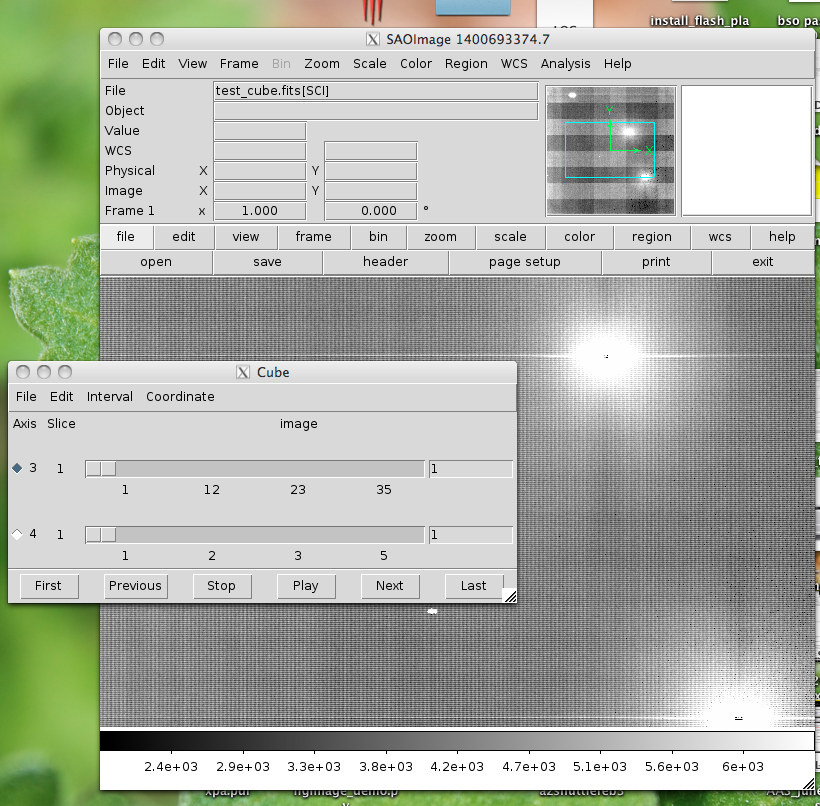

Example 4¶
Load and examine an image CUBE¶
Image cubes can be multi-extension fits files which have multidimensional (> 2) images in any of their extensions. When they are loaded into DS9, a cube dialog frame is opened along with a box which allows the user to control which slices are displayed. Here’s what the structure of such a file might look like:
astropy.io.fits.info('test_cube.fits')
Filename: test_cube.fits
No. Name Type Cards Dimensions Format
0 PRIMARY PrimaryHDU 215 ()
1 SCI ImageHDU 13 (1032, 1024, 35, 5) int16
2 REFOUT ImageHDU 13 (258, 1024, 35, 5) int16
Here’s an image of what this looks like displayed in DS9:
You can use all the regular imexam methods with this image, including imexam() and the current slice which you have selected will be used for analysis. You can also ask imexam which slice is display, or the full image information of what is in the current frame for your own use (ds9 is just the name I chose, you can call the control object connected to your display window anything)
ds9=imexam.connect()
ds9.load_fits('test_cube.fits')
ds9.window.get_filename()
Out[24]: '/Users/sosey/ssb/imexam/test_cube.fits'
ds9.window.get_frame_info()
Out[25]: '/Users/sosey/ssb/imexam/test_cube.fits[SCI,1](0, 0)'
Now I’m going to use the Cube dialog to change the slice I’m looking at to (4,14) -> as displayed in the dialog. DS9 displayed 1-indexed numbers, and the fits utitlity behind imexam uses 0-indexed numbers, so expect the return to be off by a value of 1.

Let’s ask for the information again:
In [26]: ds9.window.get_filename()
Out[26]: '/Users/sosey/ssb/imexam/test_cube.fits'
In [27]: ds9.window.get_frame_info()
Out[27]: '/Users/sosey/ssb/imexam/test_cube.fits[SCI,1](3, 13)'
You can ask for just the information about which slice is displayed and it will return the tuple(extension n, ...., extension n-1). The extensions are ordered in row-major form in astropy.io.fits:
In [28]: a.window.get_slice_info()
Out[28]: (3, 13)
The returned tuple contains just which 2d slice is displayed. In our cube image, which is 4D (1032, 1024, 35, 5) == (NAXIS1, NAXIS2, NAXIS3, NAXIS4) in DS9, however in astropy.io.fits this is (5,35,1024,1032) == (NAXIS4, NAXIS3, NAXIS2, NAXIS1)
By default, the first extension will be loaded from the cube fits file if none is specified. If you would rather see another extension, you can load it the same as with simpler fits files:
ds9.load_fits('test_cube.fits',extname='REFOUT')